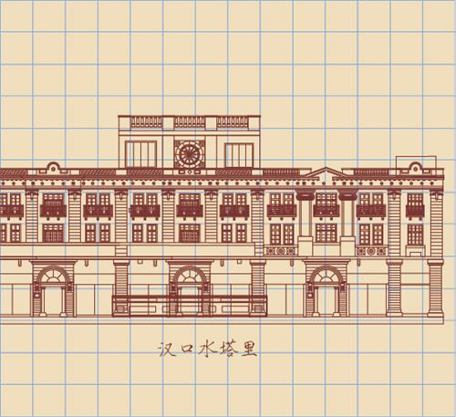

所在街区：江汉区中山大道539号 建筑风格：古典主义 建造年代：1992年 现存情况：老亨达利钟表

"武汉亨达利的前身是太平洋表行，它是由陈文先生从德国人那里接手的。"在武汉亨达利总经理王盛华的讲述中，让我们把时间重新拨回到上个世纪之初。
1910年，曾在上海美华利钟表店当学徒的浙江人陈文先生来到汉口，在德商礼盒洋行经营的太平洋表行当“跑街”。由于一站爆发，德商撤走，临时将太平洋表行卖给了陈文先生。从此，陈文先生设汉口亨达利钟表行，几年中又数易其址。